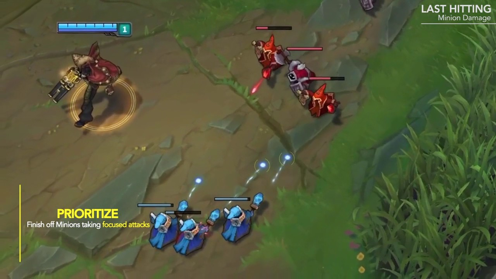

Laning is the beginning phase of the game
where you last hit creeps, "trade" with your
opponent, and secure early game objectives
with your team.
Good laners will easily outshine anyone lacking
in this fundamental skill of the game even if
they're superior at teamfighting or dueling.
Laning can take years to become proficient in, even the professionals train everyday to perfect the craft. Therefore, it's important to begin learning by forming some good habbits listed in this documentation.
Last hitting minions to get gold is a no brainer.
You need gold to buy items so you may slay and push
past your foes in order to win the game.
But if it was that simple, then why is the average
silver player farming only 5 creeps per minute?

The reason for this is usually lack of focus. There
are a lot of things that are worthy of focus
while laning, and farming with precision must be an
unconcious habit, a second nature.
Once a player gains a creep score (cs) lead of 2 waves,
he can reset and surprise his oponnent with an extra
powerful item component and go for a solo kill.
One solo kill will snowball into plates, and more farm.
In high level play, one mistake will destroy your tempo
and cost you or your oponnent everything
Farming well is easily the most consistent way of winning
games.
Trading simply means exchanging blows with
your oponent through abilities or auto
attacks.
This is key to getting "prio" or priority
over your lane, forcing your oponennt to
let you farm, give you first roam, or
concede farm themselves in order to not
lose a favorable amount of health.
Trading consists of short trades and
"all-ins."
The former is usualy weaved inbetween minion last
hits at the exact moment your adversary is in his
auto attack animation when last hitting. This forces
them to continuously decide wether they want to trade
back with you or give up the cs. Usually this type
of trade will end with one or two exchanges of abilities,
unless one player senses kill potential.
All-inning is when you realise there is the potential
to kill your oponnent, then charging them down with
your auto attacks and abilities.
You don't want to always all-in, though, because minions do
a considerable amount of damage in the early and mid game.
So, if you fight in an army of enemy minions all of the
time, you'll surely start to lose your trades if the
enemy responds to your aggresion by just walking away into
the wave.
There are 3 main objectives that you should plan ahead for when
laning: the dragon, herald, and scuttle crab.
You should attempt to "shove out" or clear a wave 30 seconds before
one of these objectives are spawning if your team is in a good
position to contest them. This is to gain prio over your lane
and give you the first move to the objective, increasing the man
power of your team before the enemy laner can match you.
If you have a lot of gold in your pockets or can purchase a key
item component, it's strongly recommended that you recall 45 seconds
in advance to visit the shop while still showing up on time.
While scuttle crabs aren't real objectives, they're very important to
your jungler since they give a lot of gold while providing perpetual
vision in a key portion of the map. Good laners will take the same
precautions for scuttle crabs as they do for dragons and heralds.
If you make the effort in supporting your jungler, they will likely
become more influential in the game which will certainly help your
team in the long run. They'll also appreciate it very much :)
Roaming is an advanced tactic that is similar in roaming for objectives except it's more focused around getting kills for yourself or your team.
This can occur at anytime, though, since depends heavily on
the wave states of other lanes.
For example, when you recall for an item, the enemies have
zero idea where you will walk from base, so if top lane is pushed
up your could make a roam into top river and potential find
yourself or your top laner a valuable kill.
Or if you shove out your top lane and have nothing to do but enemy mid
laner is low health under tower, you could roam down and potentially go
for the dive.
Be careful though, as if these roams go wrong you could end up losing your own lane! Your oponnent usually won't be asleep and will be either rushing down your tower or be right on your tail to clean up if you get too low or the play goes bad.